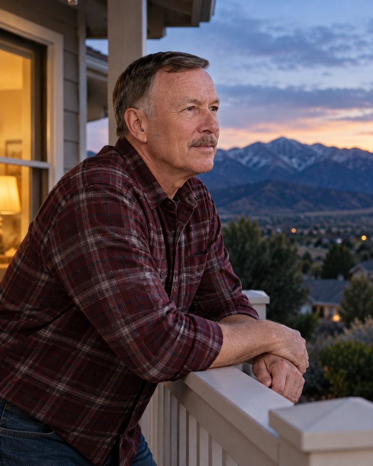
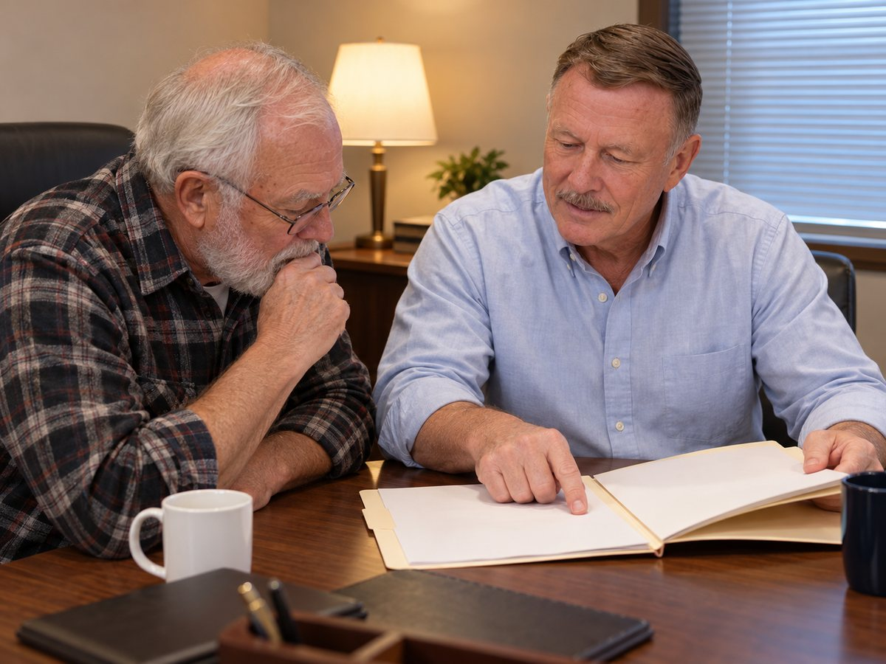
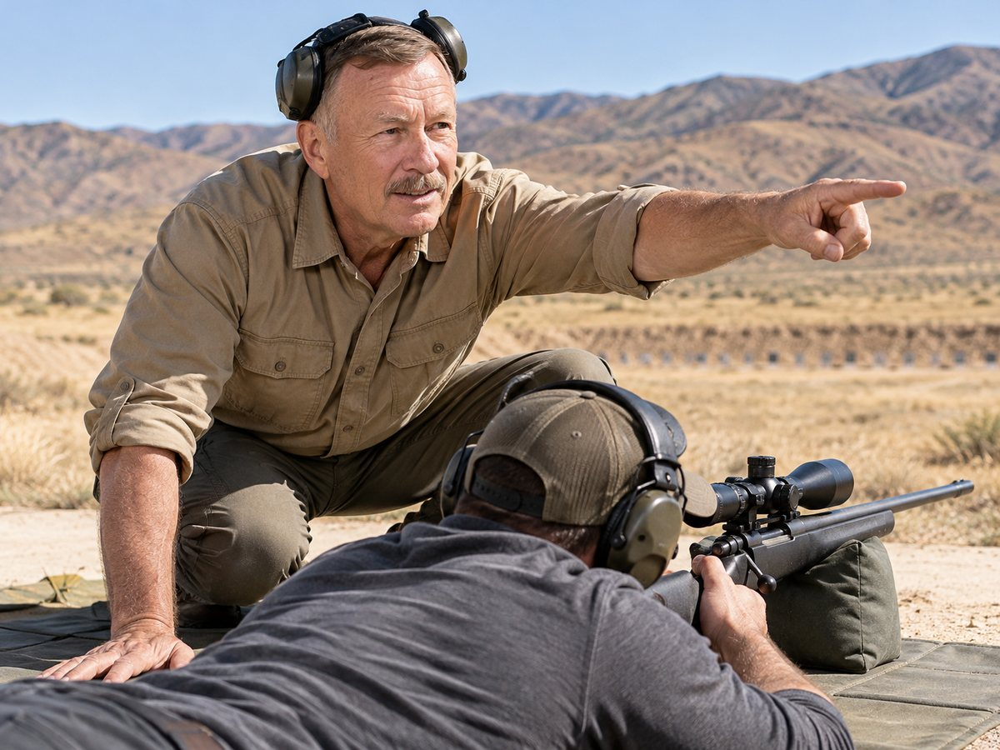
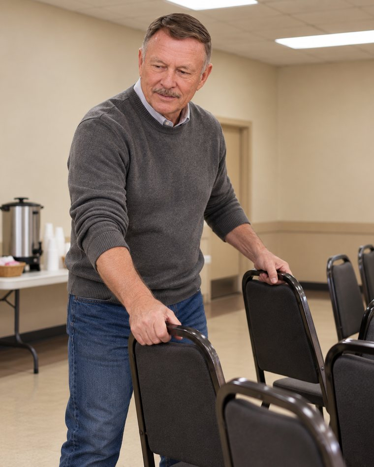
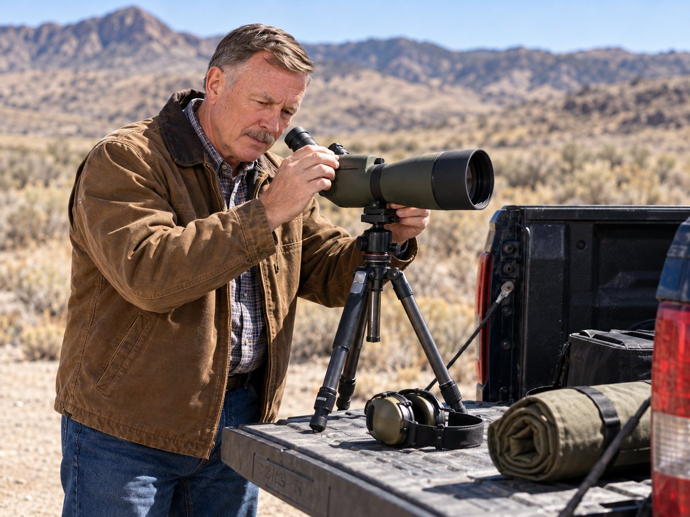
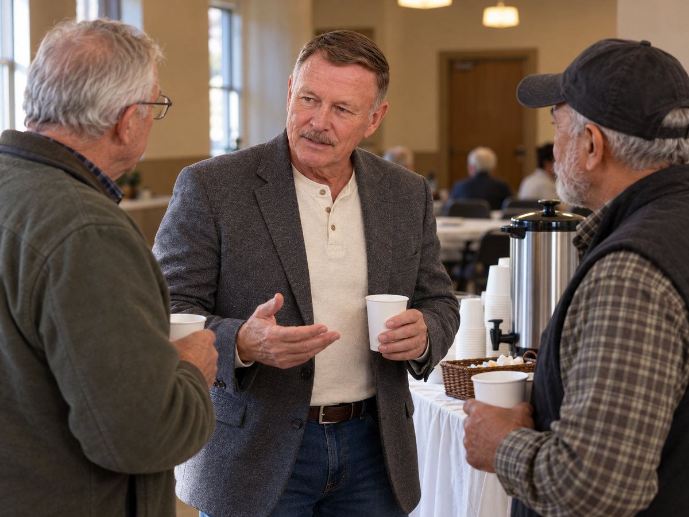
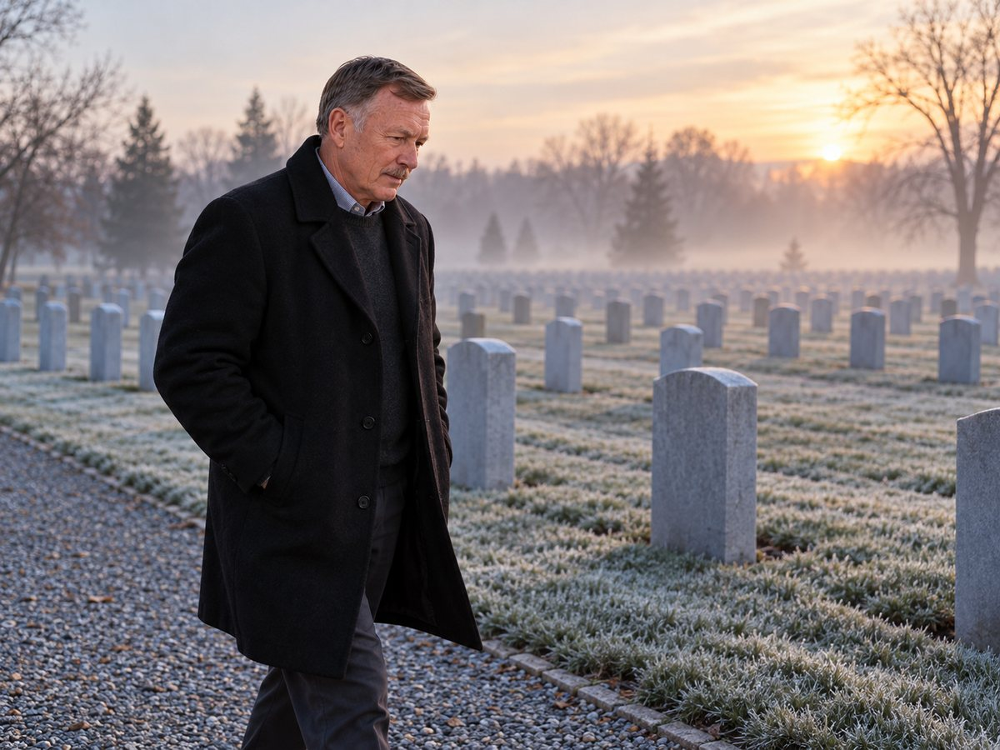
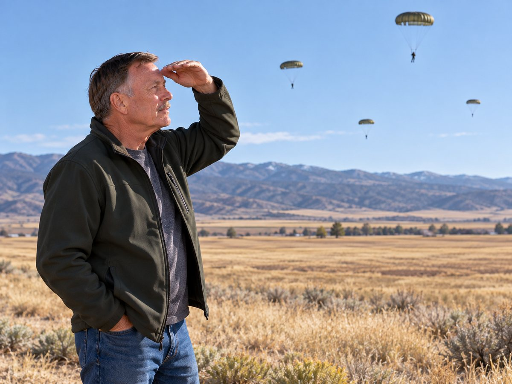

Command Chief Warrant Officer, United States Army, retired. Thirty nine years in uniform, first as a Marine Corps officer and then on Special Forces teams, and a working retirement spent on the people who served beside him.
John A. Wester Jr. served four years in the United States Navy Reserve while he was at university, was commissioned a second lieutenant in the United States Marine Corps in 1972, and rose to captain before leaving the Corps in December 1982.
He joined United States Army Special Forces that same month. In 1985 he resigned his commission so that he could stay on the teams, and in 1988 he became a warrant officer. He went on to be the first Chief Warrant Officer 5 in the 19th Special Forces Group.
His assignments and deployments took him to Korea, Thailand, the Philippines, Germany, Afghanistan and Iraq. He retired in December 2011.
Four years in the United States Navy Reserve.
Commissioned a second lieutenant in the United States Marine Corps, the same year he finished his degree at the University of Utah.
Served in operations in Southeast Asia.
Promoted to captain in the Marine Corps.
Left the Marine Corps and joined United States Army Special Forces.
Resigned his commission in order to stay on Special Forces teams.
Became a warrant officer.
First Chief Warrant Officer 5 in the 19th Special Forces Group. Observed unit operations, identified and addressed problems, and gave commanders expert recommendations.
Retired as a Command Chief Warrant Officer.


He is president of Chapter 70 of the Special Forces Association, and a member of the Veterans of Foreign Wars and the American Legion.
He facilitates marksmanship training, and he sits down with veterans to help them put together their disability claims to the Department of Veterans Affairs. He also gives his time to suicide prevention work among veterans.
It is the same job he did at the end of his career, carried on in civilian clothes: watch what is happening, find the problem, and tell somebody who can fix it.






Every picture of John Wester on this page is an AI-generated illustration, produced with his approval from a reference photograph. They are not photographs of real events.
Write to John Wester about Chapter 70, about marksmanship training, or about help with a claim to the Department of Veterans Affairs.